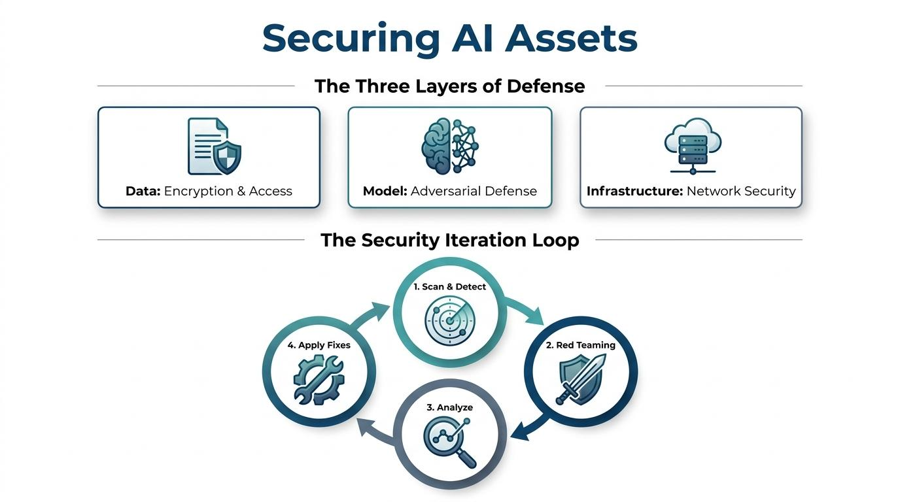

Security Architecture & Flow
Hover to inspect details
01. Overview
As Artificial Intelligence (AI) becomes integrated into everything from healthcare to finance, the "assets" that power these systems—the data, the math (the model), and the computers they run on—become high-value targets for attackers.
"AI security is not just about stopping a single hacker; it is about ensuring the integrity, privacy, and availability of the entire system."
If an AI asset is compromised, it could leak sensitive personal information, provide biased or dangerous advice, or be "poisoned" to fail when needed most. This lesson explores the multi-layered defense strategy required to keep AI systems safe and the continuous cycle of testing used to stay ahead of threats.
Main Learning Points
03. The Three Layers of AI Security
Security in AI is often compared to an onion; you must peel back several layers before you reach the core. Each layer requires specific tools and strategies to defend.
1. Data Security (The Raw Material)
Data is the "food" that AI eats to learn. If the food is tainted, the AI gets sick.
2. Model Security (The Brain)
The model is the set of rules the AI has learned. This is often a company's most valuable intellectual property.
3. Infrastructure Security (The Home)
The physical or cloud-based environment where the AI lives and works.
Network Security: Firewalls and secure connections to prevent outside intrusion.
Vulnerability Management: Scanning software for "holes" or bugs that need patching.
04. The Security Iteration Loop
In traditional security, you might build a wall and walk away. In AI, the "Flow State" is critical—security is a constant, moving cycle.
Scan & Detect
Automated tools looking for known problems like outdated software or weak credentials.
Simulate Attack (Red Teaming)
Ethical hackers pretend to be bad guys to "break" the AI before real attackers can.
Analyze Vulnerabilities
Understanding why the weakness happened—be it biased data or infrastructure gaps.
Apply Fixes
Updating code, adding data filters, or strengthening the network connections.
05. Summary
Defense in Depth
Protect Data, the Model, and the Infrastructure simultaneously.
Proactive Testing
Using Red Teaming to simulate real-world attacks and find vulnerabilities.
Continuous Improvement
Security is a cycle of detecting, testing, analyzing, and fixing.
Module Complete!
You've successfully covered the foundational layers of AI Security.